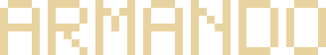

Armando Albornoz portfolio
Use arrow keys or W A S D to navigate the terminal, Enter to open, and Escape to go back. You can also use the on-screen controls or skip directly to the project list.
or press any key

Loading terminal
- Terminal
- Keyboard
- Display
The 3D terminal couldn’t load. You can still browse every project.
Projects
The 3D terminal is unavailable. All project pages and reports are still available here.